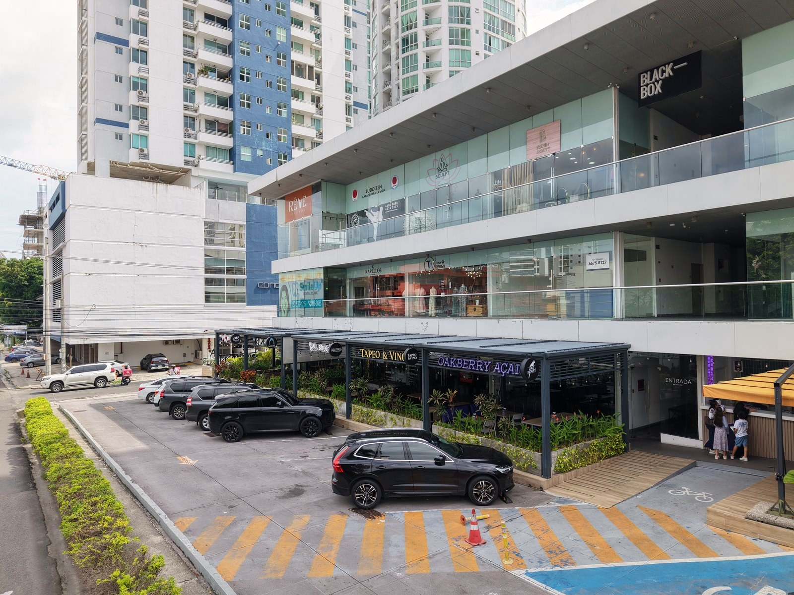
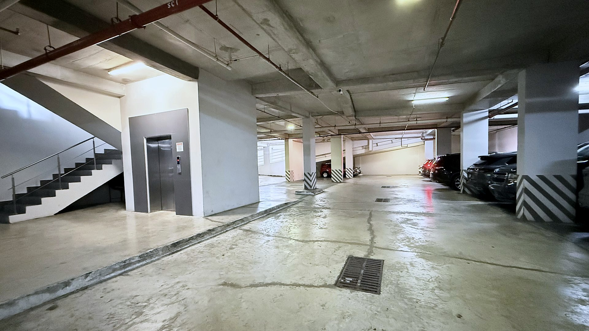

Disponibles 4, 22, 23 · Alquilados 11, 13, 15, 21 · Administración 16La ubicación en la fachada es aproximada; la división exacta se confirma con la administración.
02 · Locales disponibles
Dos en el segundo piso, uno en planta baja.
Los del segundo piso comparten metraje y canon; el de planta baja está equipado para restaurante.
Local 4
102 m²
Planta baja · 82 + 20 m² de terraza · Gas · 3 fotografías
Canon mensual$3,060
Mantenimiento $255 · Aseo incluido · Impuestos aparte
Ver desglose mensual
Canon mensual
$3,060
Mantenimiento
$255
Total mensual antes de impuestos
$3,315
— Entrega inmediata. Hoy opera un restaurante; mobiliario y equipos no incluidos, se negocian con el inquilino actual.
La planta baja concentra ocho restaurantes. En los niveles superiores funcionan negocios que reciben clientes por citas, clases y servicios. Para un nuevo inquilino eso significa entrar a una plaza que ya está operando, con estacionamiento disponible y distintas razones de visita a lo largo del día.

Planta baja, vista desde Calle 68 Este · El Local 4 es el de la terraza a la izquierda

Sótano bajo techo · 46 de los 60 puestos
Planta bajaOcho restaurantes
Primer pisoSalud, belleza y comercio
Segundo pisoActividad física y comercio
04 · Acceso e infraestructura
Lo confirmado y lo pendiente.
Solo aparece lo que la administración ha confirmado. Lo demás se dice como pendiente.
HorarioSin restricción en planta baja; sótano cierra 11:30 p.m.
Música y barPermitidos dentro del límite aprobado
Aire acondicionadoSí, en el Local 4
Carga y descarga— Por confirmar
05 · Preguntas
Lo que suelo aclarar.
¿El canon incluye el mantenimiento?
No. Los locales 22 y 23 cuestan $1,800 al mes ($18 por m²); aparte se pagan mantenimiento ($250) y aseo ($15): $2,065 al mes antes de impuestos.
El Local 4 cuesta $3,060 al mes ($30 por m²) más mantenimiento ($255, con el aseo incluido): $3,315 al mes antes de impuestos.
Cada ficha lo muestra en Ver desglose mensual.
¿Cuánto necesito para firmar?
Para firmar se requiere el pago del primer mes y un mes de depósito de garantía.
¿Qué gastos no están incluidos?
No están incluidos electricidad, internet, permisos, adecuaciones, seguros, consumos propios del negocio ni otros servicios que el inquilino contrate directamente.
¿En qué condición se entrega el local?
El Local 22 se muestra como una planta abierta con un baño. La separación respecto al Local 21 y la condición de entrega de ambos locales se confirmarán con la administración antes de contratar.
Antes de firmar se deja por escrito qué permanece, qué se retira y en qué condición se entrega.
¿Qué giros pueden operar en la plaza?
Cada propuesta se evalúa según su compatibilidad con la mezcla comercial, la infraestructura disponible y las aprobaciones requeridas.
Estos son algunos conceptos que podrían complementar la mezcla actual:
Estética y cuidado facial
Spa y masajes
Medicina estética o dermatología
Wellness y recuperación deportiva
Servicios especializados de salud
Otros conceptos de atención por cita
Si me indicas qué actividad vas a desarrollar, verifico cuáles locales pueden funcionar antes de coordinar una visita.
El Local 4, en planta baja, está equipado para restaurante y admite bar, venta de alcohol y karaoke.
¿Todos los locales tienen agua, desagüe, gas y extracción?
No. La infraestructura varía por local.
Si tu negocio requiere agua, desagüe, gas, extracción o una potencia eléctrica específica, debe verificarse antes de presentar una propuesta.
¿Puedo alquilar más de un local?
El 22 y el 23 son contiguos en el segundo piso y suman 200 m². La contratación conjunta todavía no está confirmada con la administración y no hay un canon combinado definido. Si te interesa tomar los dos, dímelo y lo consulto antes de ofrecerlo.
¿Cuáles son las medidas de frente y fondo?
Varían por local. Indícame el número y te envío el plano y las dimensiones disponibles.
¿Cómo funcionan los estacionamientos?
La plaza dispone de 60 estacionamientos: catorce en planta baja y cuarenta y seis bajo techo en el sótano, dos de ellos habilitados para personas con discapacidad.
Cada contrato contempla un espacio para uso del arrendatario. Cuando no se utiliza, permanece disponible para los clientes de la plaza.
¿Cómo coordino una visita?
Indícame el local de interés, el tipo de negocio y cualquier requerimiento técnico indispensable.
Primero confirmo que el espacio y la infraestructura tengan sentido para tu operación; después coordinamos la visita.
¿Qué pasa con el mobiliario del restaurante actual del Local 4?
No está incluido en el canon. El inquilino actual lo vende y se negocia directamente con él; puedo coordinar esa conversación.
06 · Conversemos
Revisemos qué local encaja con tu operación.
Dime el giro y las instalaciones que necesitas. Reviso si el 4, el 22 o el 23 encaja con tu operación antes de coordinar una visita.